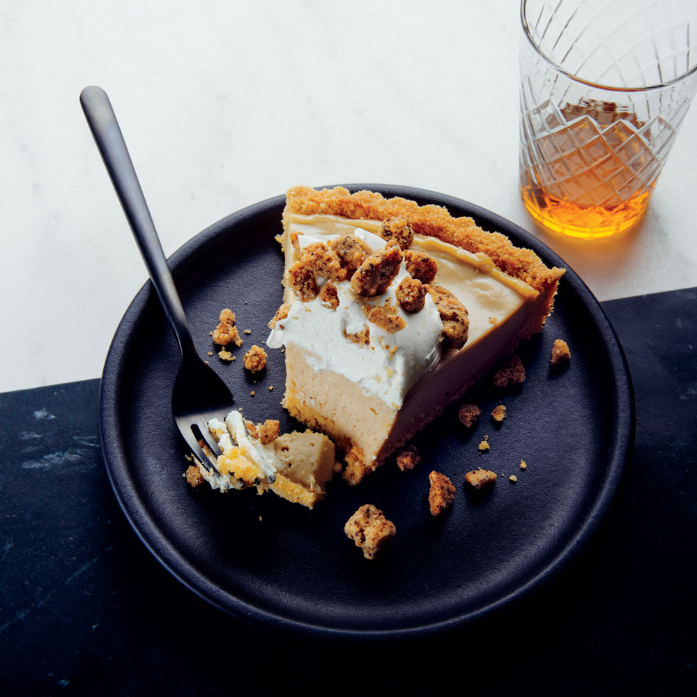

Tiramisu Icebox Pie

Pastry chef Mathew Rice of Pastaria in Nashville takes the familiar elements of a classic tiramisu—ladyfingers, coffee, and mascarpone—and reimagines them as an icebox pie. The dessert is full of playful textures and flavors, including a dense coffee mousse and salty-sweet coffee crunchies.
Ingredients:
For the crust:
- 2 1/4 cups crushed crisp ladyfingers (about 18 ladyfingers)
- 1/4 cup milk powder
- 2 tablespoons granulated sugar
- 1/2 teaspoon fine sea salt
- 1/4 cup unsalted butter, melted
- 1/4 cup heavy cream
For the filling:
- 1 (1/4-ounce) envelope powdered gelatin
- 1 1/4 cups whole milk, divided
- 1 cup (8 ounces) unsalted butter, softened
- 1/3 cup cream cheese, softened
- 1 teaspoon vanilla bean paste or 1 vanilla bean, seeds scraped
- 1 teaspoon coffee extract
- 1/2 teaspoon fine sea salt
- 1 teaspoon instant coffee granules
- 1 cup granulated sugar, divided
- 4 large eggs
Steps:
- Make the crust: Preheat oven to 300°F. Whisk together crushed ladyfingers, milk powder, sugar, and salt in a medium bowl until combined. Add butter and cream; stir until the crumbs are evenly moistened.
Press crumb mixture into the bottom and up sides of a lightly greased 9-inch fluted round tart pan with removable bottom.
- Bake crust until surface feels dry, about 10 minutes. Cool crust completely on a wire rack, about 30 minutes.
- Make the filling: Sprinkle gelatin over 1/4 cup of the milk in a small bowl; let stand 1 minute. Combine gelatin mixture, butter, cream cheese, vanilla bean paste, coffee extract, and salt in a large bowl. Set aside.
- Combine instant coffee, 1/2 cup sugar, and remaining 1 cup milk in a small heavy-bottomed saucepan. Cook over medium, stirring occasionally, until sugar dissolves.
- Whisk together eggs and remaining 1/2 cup sugar in a medium bowl until smooth. Gradually add 1/2 cup hot milk mixture to egg mixture, whisking constantly. Pour egg mixture into saucepan with remaining milk mixture, and stir to combine. Bring to a boil and cook, stirring constantly, about 3 minutes; remove from heat.
- Pour hot custard over gelatin mixture, and whisk until butter has melted. Using an immersion blender, process until silky smooth and emulsified, about 30 seconds. Press plastic wrap directly onto surface of custard, and chill until custard is cold and set, about 3 hours.
- Spoon chilled mixture into crust. Using an offset spatula, smooth surface. Press plastic wrap directly onto surface of custard and chill until completely set and sliceable, at least 2 hours. To serve, top each slice with a dollop of Whipped Mascarpone and 1/4 cup Coffee Cookie Crumble. Pie may be frozen for up to 1 month. Defrost frozen pie in refrigerator for 4 hours before serving.